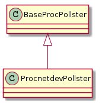
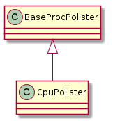

Proc Pollster
A module to watch packets and bytes received on an interface.
This was originally for monitor-mode wlan interfaces but is now meant to look for errors
Proc Net Dev Pollster
Proc Net Dev Pollster Constants
class ProcnetdevPollsterEnum(object):
"""
A class to hold constants
"""
__slots__ = ()
interface = 'interface'
receive_bytes = 'receive_bytes'
receive_packets = 'receive_packets'
receive_errs = 'receive_errs'
receive_drop = 'receive_drop'
receive_fifo = 'receive_fifo'
receive_frame = 'receive_frame'
transmit_bytes = 'transmit_bytes'
transmit_packets = 'transmit_packets'
transmit_errs = 'transmit_errs'
transmit_drop = 'transmit_drop'
transmit_fifo = 'transmit_fifo'
transmit_colls = 'transmit_colls'
transmit_carrier = 'transmit_carrier'
#end class ProcnetdevPollsterEnum
class ProcnetdevPollsterIndices(object):
"""
A class to hold indices to place the values in order
"""
__slots__ = ()
rbytes, rpackets, rerrs, rdrop, rfifo, rframe = range(6)
tbytes, tpackets, terrs, tdrop, tfifo, tcolls, tcarrier = range(6,13)
# end class ProcnetdevPollsterIndices
Proc Net Dev Pollster Class

CPU Pollster
class CpuPollsterEnum(object):
__slots = ()
user = 'user'
nice = 'nice'
system = 'system'
idle = 'idle'
# end class CpuPollsterEnum

Debug
if __name__ == "__main__":
from apetools.connections.sshconnection import SSHConnection
import sys
c = SSHConnection("portege", "portegeadmin")
p = ProcnetdevPollster(sys.stdout, c, "wlan0")
p()